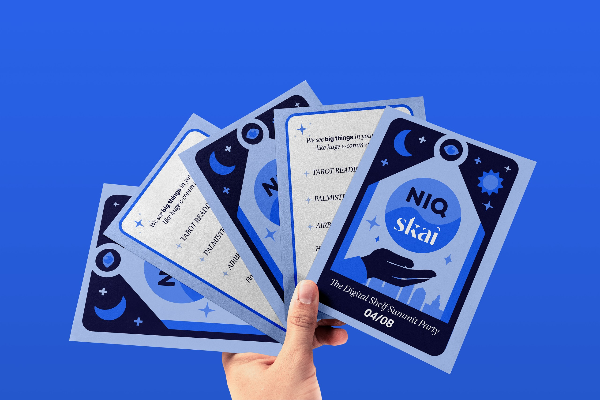
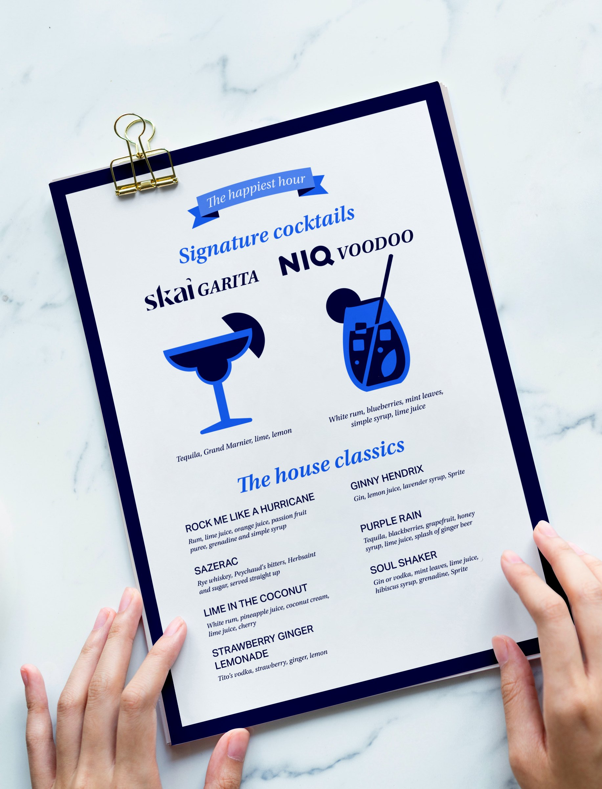
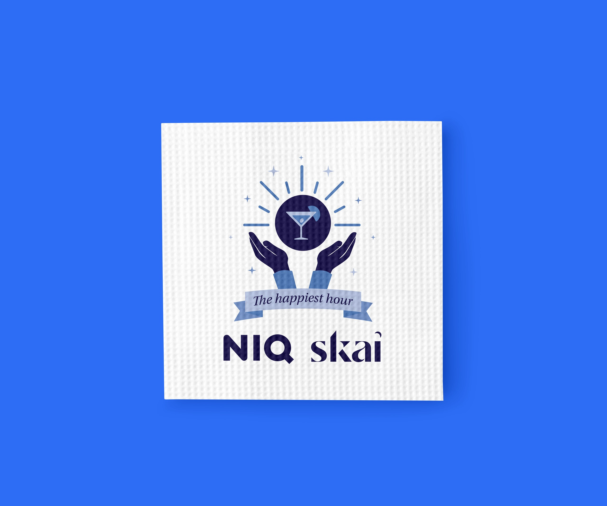

Design événementiel
The Happiest Hour
L'identité visuelle d'un cocktail NIQ × Skai lors du Digital Shelf Summit 2025, inspirée du vaudou de La Nouvelle-Orléans.
- Client
- NIQ × Skai
- Année
- 2025
- Rôle
- Designer & illustratrice
- Périmètre
- Invitations, menu, serviettes

Le brief
Pour célébrer le partenariat entre NIQ et Skai, j'ai créé l'identité et les supports de The Happiest Hour : un cocktail où clients, partenaires et équipes internes pouvaient se rencontrer dans un cadre détendu et mémorable.
Le défi : concilier une soirée ludique sur le thème du vaudou avec le ton plus corporate d'un événement B2B. J'ai associé les bleus de NIQ à des illustrations espiègles et à une typographie affirmée, de style éditorial.
01
L'invitation
Invitations
Des invitations imprimées et digitales en forme de cartes de tarot donnent le ton : lunes, étoiles, œil omniscient et une main tenant la boule de cristal NIQ × Skai au-dessus d'une ville. Au dos, « We see big things in your future » annonce les animations de la soirée, de la lecture de tarot à la chiromancie.
02
Menu & serviettes
Menu
Le menu mêle icônes ludiques et noms inspirés des marques. Chacune a son cocktail signature, le SkaiGarita et le NIQ Voodoo, avec des illustrations sur mesure, aux côtés d'une carte de grands classiques.
Il a été conçu pour l'impression.

Serviettes
Des illustrations sur mesure et une typographie affirmée. Les invités les ont emportées en souvenir.

Résultat
Les invités ont adoré, et un simple afterwork est devenu un vrai temps fort pour l'image de marque.